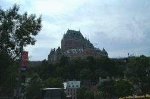

|
Продолжение...
Не успели мы отработать и 3-х недель после викторианских праздников, как были оба уволены с работы. В один день, в один час... только с разных мест.
Про грядущие сокращения в связи с закрытием торонтовского офиса PTC (компании, где честно трудился Ваш покорный слуга), нас известил местный директор заранее.
По планам намечалось уволить бОльшую часть сотрудников, оставив меньшинство работать до окончания года на поддержке уже имеющихся в наличии проектов. Мало того,
по секрету (по индивидуальным требованиям трудящихся) начальник даже сообщил каждому конкретно, будет ли тот сокращен или нет. Я уже и без лишних вопросов
догадалась, что меня выбросят, потому как в данный период времени находилась в подвешенном состоянии: то есть когда над старым проектом все работы закончены,
а в новый я только что вступила, да и то уж завершила девелопмент и передала код в тестирование, - иными словами, ничего нового не писала, находясь на стадии
исправления ошибок и документирования кода. Правда, говорят, надежда умирает последней. И окончательно она отдала концы, когда у меня вдруг что-то произошло с
электронной почтой, и никто не стал с этим разбираться и налаживать. Начальнику показалось проще форвардить для меня письма самолично, нежели связываться с
головным американским офисом PTC, дабы поднять проблему.
- Что, Джеф, я так понимаю, меня уволят?
- Прости, Наташа, я ничего не могу с этим поделать...
Конечно, все там будем, - пронеслось у меня в мозгу. На начальника я нисколечко не обиделась. Напротив, постаралась утешить оного, ибо подсознательно он
чувствовал огромную вину за всех нас, за то, что не смог сломить сопротивление, за то, что позволил офису рухнуть. Более всего жалко коллектив, а не то, за
что боролись. Сохранись этот коллектив, мы бы сваяли вещи и куда покруче, но, к сожалению, в связи с кризисом прошли те времена, когда можно было торговать
целыми коллективами. Джеф был сам не свой, и я не знаю, как все остальные, но я честно сказала ему, что он был самым лучшим моим боссом ever, и если когда-нибудь
он организует новую компанию и позовет меня к себе, то я приду с огромным удовольствием.
После осознания того факта, что мне осталось недолго мучиться, на душе как-то повеселело, и я уже была рада увольнению.
Радость моя обусловливалась еще и тем, что мне давно хотелось отдохнуть. Работа моя для меня, конечно, хобби, то есть я страшно люблю свое дело, и если бы меня
не угораздило родиться разносторонней девочкой, то жить бы мне на сием свете припеваючи. Работай себе да кайф лови. Однако, у меня много разных хобби. И, работая,
порою до ночи, уже просто не остается сил на что-либо другое. Результаты сего очевидны: неудовлетворенность собой, жизнью, ощущение того, что оная бездарно уходит,
а время летит в пропасть. Вот и хотелось мне немного себя компенсировать. Вернее, не себя, а работу.
В реальности же все оказалось куда сложнее... Дело в том, что мы с Андрюшей никогда не рассматривали вариант, что можем оказаться без работы оба. Один из нас, -
да, это возможно. Все возможно в столь трудное для страны и всей Северной Америки время. Но чтобы оба!
Тем не менее Андрюша сильно нервничал. Ведь уже больше полугода он сидел на бэнче (bench - скамейка), то есть получал деньги, но сидел дома, ожидая вызова на работу.
А вызова все не было и не было. И чем дальше, тем хуже. То вроде возьмут его в проект, а потом оказывается, что забыли выделить под сей проект деньги. То закроют
проект, то просто нет никаких заказов, а, соответственно, и проектов. Все бы ничего, но в IBM тоже началась массовая чистка. Андрюша уже звонил менеджеру, просился
хоть куда, справедливо опасаясь, что в первую очередь начнут увольнять "неработающих" сотрудников. Менеджер, однако, немало успокоил Андрея, заверив, что сокращения
никаким, дескать, боком не относятся к сидению на бенче, и что большую часть тех, кого собирались уволить, уже вроде уволили. То есть можно было, конечно, вздохнуть
"Пронесло...", но отчего-то надежды сей вздох не прибавлял. И это было правильно.
Короче, в день, когда к нам в контору приехало начальство с целью массового увольнения, Андрюшу тоже вызвали в ИБМ. А когда я вышла из кабинета с пачкой "памятных"
бумаг и прочего и вернулась на место, дабы собрать вещи, зазвонил телефон, в трубке коего я узнала Андрюшин голос:
- Я свободен, как птица, - нотами черного юмора сообщил муж.
Вот так вот...
Осознание того факта, что мы оба потеряли работу, не сказать, чтобы придавило нас к ногтю. Мы были в полной уверенности, что такие крутые программисты, как мы,
вряд ли надолго останутся невостребованными. 3 года канадского опыта, уверенность в себе и все такое... Ну подумаешь, через месячишко-другой работать будем еще
краше. Тем более, что пэкиджи нам дали (package - деньги в размере двух зарплат, на проживание в течение следующих 2-х месяцев), так что протянем. ...Мы, глупые,
тогда еще не были в курсе о положении дел на рынке труда... Составили новые резюме и принялись складывать их, как обычно, на все известные и безызвестные
рекрутерские сайты.
А тут вновь грянули праздники. На праздниках все равно никто не работает, потому и работу искать смысла особого нет. Отдыхай да радуйся. Мы собирались порадоваться
с семейством Плюшко, имея в планах свозить их наконец-то на Ниагарский водопад. Но Костя Тесленко умудрился совратить их поехать вместо этого на пляж, а на водопад,
мол, следующим днем. Андрюше на пляж совсем не хотелось ехать. Оттого, видимо, и пришла ему на ум сумасшедшая идея:
- А поехали завтра поутру в Квебек-сити!
Сумасшедшего было бы в этой идее не так уж много, если бы поездка хоть как-то планировалась заранее. Но стрелки показывали 11 часов вечера, и мы, и в ус не дуя,
расслаблялись себе на диванчике, глядючи в пресловутый ящик. Я для вида посопротивлялась немного, но потом рванула собирать вещи в дорогу, а Андрюша засел в
Интернете бронировать места в гостинице. Ведь жить-то где-то надо в столице провинции Квебек.
Как водится, к утру мы собрались, к полудню выехали. Гэндальф у нас уже наученный, может сидеть дома один до 4-х дней включительно (хоть я и переживаю всегда за
него страшно). Дорога пролегала через Монреаль, что нам уже знакомо. Навигационная система в порядке. В Монреале мы поужинали в ресторанчике, а полночь уже встретили
в отеле Quebec-city под названием "L'Aristocrate". "Bed and breakfast" по типу Марины с Сашей нам заказать не удалось, - было уже поздно, поэтому проживали мы в
10-ти минутах езды от старого города на одной из центральных улиц Сант-Луи (St-Louis). Собственно, старый город нас и интересовал. Люди, бывшие там, рассказывали,
что это словно кусочек Франции, кусочек Парижа, и нам, разумеется, не терпелось увидеть все своими глазами.
Люди не обманывали. Сей город действительно нечто уму непостижимое. Старинная архитектура, такие же узенькие мощеные улочки, развешенные всюду цветочки в
аккуратненьких горшочках, живописно разрисованные стены домов, французский стиль, французский дух... (Andrew: Только как-то там все... слишком уж... То есть
ощущение, как-будто там Франция более французская, чем настоящая европейская Франция :) Только что почти все жители умеют разговаривать по-английски. Прогулки
по старому городу доставляли нам истинное наслаждение. Отовсюду слышна старинная французская музыка, масса исполнителей (музыкантов, певцов) тут и там,
подплясывающие и подпевающие вальяжные прохожие. Здесь, в Торонто, только в русских ресторанах люди танцуют и пляшут от души. В сугубо канадских ресторанах
этого никто никогда не делает: то ли не принято, то ли это просто в голову им, канадцам, не приходит, - а чтобы прям на улице вот так вот отплясывать! - это
вообще из ряда вон выходящее.
Не знаю, как в Квебек-сити приходится местным жителям, но туристам там явно неплохо. Ходим-бродим, глазеем по сторонам, отдыхаем на пристани, обследуем места.
Чуток устанем, присаживаемся за уличный столик ближайшего ресторанчика, я заказываю бокальчик белого прохладного вина (тем более, что жара в нашу поездку выдалась
неописуемая, если не ошибаюсь, рекордная за последние несколько десятков лет), а Андрюша - стаканчик пива. Дальше походим, опять присядем. И так весь день. Меня
всегда прикалывало в Париже, как на таких узеньких улочках французы умудряются пристроить ресторанные столики со стульчиками, хоть бы и миниатюрные, и как при
этом не пропадает чувство тотального уюта и всеобъемлющей эйфории. И в Квебек-сити то же самое.
Можно прокатиться по городу на лошадке, правда, не верхом, а в повозке-карете. Этот сервис, мы так поняли, весьма популярен в Квебеке. Не только в самой столице,
но и в провинции, как таковой. Не скажу за все города Квебека, но в Монреале мы тоже имели счастие лицезреть множество лошадиных экипажей, с ветерком проносящих
мимо любознательных туристов.
В новом городе мы побывать не успели, но старый город весь расположен на холмах: вверх-вниз, вверх-вниз, - у меня даже стельки в босоножках превратились в
гармошку, - и зачем только я опять напялила эти каблуки? Самый огромный холм - это возвышение от пристани на реке Сант-Лоренс (Saint-Laurent (фр.), по-русски она,
кажется, звучит, как река Святого Лаврентия) к собственно старому городу. Для удобства передвижения даже построен фуникулер - "Ди ФунИкьюля".
Квебек-сити имеет много замечательных по своей архитектуре зданий, и, припоминая Париж, мы ринулись было их посещать. На самом же деле, посещать там особо нечего.
Вся красота - снаружи. Изнутри города ее почти нет, не в обиду будь сказано прекрасной квебекуанской столице. Просто по сравнению с Францией история Квебек-сити
совсем невелика и соответственно ничего особо ценного в себе пока не накопила.
 Например, мы зачем-то поперлись в музей цивилизации, предполагая, что там должно быть что-то необычное, что-то сродни Франции. На деле музей тот оказался
абсолютно убогим. Зачем его вообще построили, непонятно. Если музей Цивилизации города Халь (тоже провинции Квебек) отличается неповторимостью, артистичностью и
даже историческими экспонатами, если в нем можно с удовольствием провести почти целый день, то одноименный музей Квебек-сити и рядом с ним не стоял (или не лежал?).
Единственное, что мне там понравилось, - это отдельная выставка туфель. Как настоящих, разных эпох и народов, так и выдуманных дизайнерами. Последние мне особенно
понравились! В какую сторону только не работает у людей фантазия! Все, что можно (и нельзя) представить себе, выполнено в виде туфли. Я даже не берусь описывать, -
поглядите сами (если, конечно, эта экспозиция не одноразовая).
Например, мы зачем-то поперлись в музей цивилизации, предполагая, что там должно быть что-то необычное, что-то сродни Франции. На деле музей тот оказался
абсолютно убогим. Зачем его вообще построили, непонятно. Если музей Цивилизации города Халь (тоже провинции Квебек) отличается неповторимостью, артистичностью и
даже историческими экспонатами, если в нем можно с удовольствием провести почти целый день, то одноименный музей Квебек-сити и рядом с ним не стоял (или не лежал?).
Единственное, что мне там понравилось, - это отдельная выставка туфель. Как настоящих, разных эпох и народов, так и выдуманных дизайнерами. Последние мне особенно
понравились! В какую сторону только не работает у людей фантазия! Все, что можно (и нельзя) представить себе, выполнено в виде туфли. Я даже не берусь описывать, -
поглядите сами (если, конечно, эта экспозиция не одноразовая).

Поражающее своими величием, мощью и красотой здание Шато Фронтенак (Chateau Frontenac) - всего лишь гостиница. Но, правда, очень крутая гостиница. Только великие и
богатые люди способны заказать в ней номера, которых в том Фронтенаке более 600. Особенно впечатляет гостиница в сумерках и ночью. Со всех сторон подсвеченный
разными огнями, Фронтенак напоминает огромный старинный замок и кажется просто каким-то неземным, сверхъестественным сооружением. А расположен он на том самом
холме над пристанью и хорошо заметен за много верст, как с берега, так и с реки. Непосредственно под Фронтенаком располагается некое подобие как бы второй, верхней
пристани, откуда открываются прекрасные виды на реку, на часть самого нижнего Квебек-сити, куда ходит Фуникулер, и на другой берег. Все пристани (особенно вечерние)
туристических и курортных городов похожи своим настроением: Одесы, Феодоссии, Приморского (где расположен дом-музей Максимиллиана Волошина), нашего Niagara Falls.
Счастливые, воодушевленные лица, сказочное освещение, приятная музыка. Возле Фронтенака плюс ко всему почти каждый день дают представления различные фокусники и
акробаты. И люди, соответственно, собираются поглазеть.
Взбрело мне в голову посетить Цитадель (The Citadelle of Quebec)... Цитадель - это военная крепость, если кто не знает. Но, правда, в случае с Квебек-сити, она
никогда по назначению не использовалась. Ну не было войн! Наш торонтовский форт хоть славится сражениями со Штатами. А Цитадель просто была построена на всякий
пожарный случай. Дабы достичь данного места, подняться надо было на 305 (точно я забыла, - может, 310 или 315) ступенек, которые начинаются, кстати, на той же
прогулочной площадке у Фронтенака. Андрюша покривился маленько, но за неимением предложить что-либо получше (потому как это было уже под конец нашего пребывания
в Квебеке, и все, что можно было обсмотреть, мы посозерцали), согласился. Видимо, нашего счетовода вдохновила мысль и впрямь пересчитать все ступеньки. Не наврали.
Ступенек ровно столько, сколько и предупреждали (Andrew: на самом деле господа квебекуанцы слегка слукавили - то самое точное число - кажется 315 ступенек - это
если считать все, вплоть до ступенек в небольшой беседке на верхушке холма :) Чтоб попасть в Цитадель, в беседку заходить необязательно, так что вопрос правдивости
количества ступенек остается спорным :). Отдышавшись наверху, мы затем долго перлись куда-то вниз, но уже не по ступенькам, а просто по пологой горке. Наконец,
входим в ворота Цитадели, и добрый мальчик на входе сообщает нам, что попасть внутрь можно только будучи членом экскурсии, а все экскурсии на сегодня уже
завершились. Причем минут 20 назад. Ну не обидно ли? Мы как раз в это время сходили на берег с прогулочного катера-корабля, который катал нас по Сен-Лорен вдоль
города.
Вообще, река Святого Лаврентия - это очень широкая и мощная река. Еще с давних времен она является единственным и незаменимым путепроводом, связующим Атлантический
океан с 5-ю великими озерами Северной Америки. Сей путь тысячелетиями использовали аборигены, а затем и торговцы шкурками (ставшие первыми поселенцами) со всего
мира стали проводить по Сант-Лоренс свои корабли. Я почему знаю все это? - готовлюсь к грядущему тесту на получение Канадского гражданства.
Прикольно, что на борту теплохода мы были единственными, кто не говорил по-французски (к большому лично моему стыду). Об этом мы узнали от колоритного, под старину
разодетого гида, приветствовавшего каждого влазившего на палубу экскурсанта. Тем не менее, когда я где-то в середине экскурсии подалась в туалет, то совершенно
точно расслышала по-французски, что завтра де - 1-е июля, день Независимости Канады и по сией причине намечается "пигатекнИк". Пока с гордостью раздумывала над тем,
как лихо я, оказывается, перевожу с французского, прослушала английский перевод. Андрюша же не то вздремнул, размякнув под солнышком, не то вообще ничерта не
слушал, - но про пиратекнИк он никак не помнил. На всякий случай мы следующим вечером упорно разгуливали по террасе возле Фронтенака в ожидании обещанного салюта.
Странно то, что нас с сомнением в голосе спрашивали об этом и другие блуждающие индивидуумы, но наверняка никто ничего не знал. Надежда на салют, правда, была
слабой, потому что Квебек спит и видит, как бы отделиться от Канады, а, значит, и День Независимости ему, по большому счету, пофиг. Хотя это и диковинно. Ведь
Quebec - это одна из 4-х первых провинций наряду с Ontario, New Brunswick и Nova Scotia, которая вошла 1 июля 1867 года в изначальную Конфедерацию, образовав
тем самым страну Канаду. Можно было и отметить сие событие. Ну вот, опять нечаянно знаниями блеснула.
Улицы старого Квебек-сити также духовно насыщены. Я уже не говорю о том, что все вокруг живет своим французским духом: уличные, окруженные цветочками, рестораны;
переливающиеся разнообразием витрины разных экзотичных магазинов; разносящиеся из открытых окон рок-кафе песнопения исполнителей (причем люди просто подтягиваются
к этим окнам и слушают, входить в кафе даже не обязательно, опять же можно через окно влезть). Между домами зачастую устраивают свои выставки художники. Каких
только творений там не увидишь! На любой вкус! Жаль, что мы потеряли работу, так бы обязательно прикупили пару-тройку картин. Художники также сидят прямо на
оживленных улицах и на заказ рисуют портреты. Конечно, в таком городе есть возможность вдохновиться! - когда столько прекрасных вещей ежедневно окружают тебя.
Еще поразило то, что мы почти не видели просто так вот сидящих нищих и просящих милостыню. Все так или иначе зарабатывают. Кто играет на музыкальных инструментах,
кто поет, кто придумывает, как еще отличиться. Например, неподалеку от нашего любимого ресторанчика каждый вечер неподвижно восседал дядечка с наштукатуренным под
камень лицом. Если кто-нибудь бросал денежку в его корзину, он слегка изменял свое положение. Зеваки сталпливались и вокруг него. Бросят монетку и смотрят, что
дальше будет. Так, с грехом пополам, он наконец-то включил свой патефон, возле коего сидел, а потом начал свое представление сначала. Что бы эти люди не делали,
как бы не изощрялись, это все равно работа, а посему заслуживает уважения. Люди дают тебе деньги за что-то, а не просто из жалости, на которую всецело надеятся,
например, наши торонтовские бомжи.
Кстати, о ресторанчиках. Такое ощущение, что их там больше, чем жителей Квебека. И как в Париже, работают они все ночи напролет. Мы долго с Андрюшей сновали по
вечерним улицам, изучая вывешенные на стендах меню, а также как бы невзначай поглядывая, чего там народ кушает. Андрюшу, большого любителя кровавых стейков, тем
не менее умудрился заразить некий дядечка, аппетитно разделывающий красивого красного краба. "Пошли сюда," - исходя слюной, сказал муженек, - "я такого же хочу."
В общем, заказали мы по крабу (Andrew: Лобстер, лобстер это был, а не краб! :) и мучились с ними весь остаток вечера. Но мучились охотно, с кайфом. Нам принесли
специальные щипчики, специальные вилочки, и мы самозабвенно, по-детски посапывая, использовали все те орудия труда. Официант то и дело подшучивал над нами. Потом
за соседний столик села новая парочка, и, глядючи на нас, тоже заказала крабов (Andrew: Ну лобстеров же!!! :). Время от времени мы с ними переглядывались и
улыбались. Вот каким заразительным оказался краб! (Andrew: Тьфу ты! :)
На следующий вечер мы поперлись в тот же ресторан и попали к тому же официанту.
- Ну и что будем есть сегодня? - лукаво подмигнул последний.
- Нет, сегодня что-нибудь попроще...
Я среди закусок углядела в меню snails, но почему-то именно в тот вечер на меня нашло затмение, и я искренне подумала, что это слово означает "змеи", хотя
прекрасно знаю, что "змея" - это "snake", а "snail" - это "улитка".
- Это и вправду snails? - переспросила я официанта, воображая себе тарелку с копошащимися гаденышами, хотя и давненько мечтала отведать змеиного мясца.
- Конечно! Это очень вкусно!
Тут муж мой по моим эмоциональным воплям заподозрил, что мы с официантом говорим о разных вещах, но на него, как ни странно, тоже нашло затмение, и он спросил,
как сии snails выглядят.
- Ну это типа маленькие жучки...
- 8-0 ???????!!!!!!!!!! - выражал мой взгляд.
- Нет, нет, нет, конечно же, не жучки!!! - заспешил поправляться гарсон, - короче, если я опишу тебе, как они выглядят, ты их есть не станешь. Давай просто
принесу, и ты поймешь, как это вкусно.
- Окей, - задумчиво произнесла я и отправилась помыть руки перед едой.
В туалете затмение с моей головы сошло, и я тут же осознала всю комичность
ситуации (Andrew: на самом деле в это время происходило продолжение комедии. Я уже давным давно успел сообразить, что Наташу собираются накормить улитками,
а никак не змеями, и тут опять подбегает официант - похоже, ему пришла в голову мысль - как объяснить тупым туристам что же они себе заказали. Но не успел
он начать мне это втирать, как я его заверил, что да, я вполне все понимаю, что да, это типа мерзких жуков, и что да, лично я-то их есть ни-в-жисть не буду :).
Все хорошо, что хорошо кончается! Улитки были восхитительны! Потом мы слопали еще по не менее аппетитной утиной ноге (наверное, квебекуанские походы в ресторан -
это единственный в жизни раз, когда мы с Андрюшей заказывали одинаковые блюда) и подались в свою гостиницу отдыхать.
Кстати, с тем рестораном связана еще одна запомнившаяся нам деталь. Ресторанчик располагался напротив большого кругового перекрестка, и оба раза наших посещений
мы наблюдали красивый желтый корвет, вольготно припаркованный прямо на том перекрестке. Ну надо ж! Здесь даже паркуются, как в Париже!
Старым городом, однако, наше путешествие не ограничилось. В многочисленных туристических брошюрках красочно описывались такие достопримечательности, как Basilica
of Sainte-Anne-de-Beaupre (Храм Святой Анны), Cyclorama of Jerusalem (Панорама Иерусалима) и Parc de la Chute-Montmorency (горный парк, где располагается огромный
и очень высокий водопад реки Монморенси).
Церковь, или Базилика, Святой Анны - это невообразимой красоты архитектурное строение, причем как снаружи, так и изнутри. Белое, легкое, с устремленными к облакам
двумя шпилями, оно выигрывает как вблизи, величаво выплывая из раскидистых дерев парка, так и издалека, божественною силою притягивая корабли с реки Святого
Лаврентия. Центр здания украшает большое круглое, словно кружевное, окно-розетка. Изнутри храма оно еще красивее, - лучи солнца, проходя сквозь разноцветные
стеклышки розетки, наполняют помещение таинственным переливающимся светом, который становится еще прекраснее и благороднее, отражаясь от расписанных золотом
изваяний и потолков Базилики.
Интересен тот факт, что эта церковь - очень и очень молода. То есть, на самом деле, история de Sainte-Anne-de-Beaupre уходит аж в 1658 год. Но так случилось,
что храм сей то переносили с места на место, то перестраивали, а в начале предыдущего столетия он и вовсе сгорел. Так что уже настоящая Базилика была освещена
кардиналом только в 1976 году. Честно скажу, я даже не предполагала, что в наше время могут ТАК строить. На фоне привычных нашему глазу параллелепипедов и
небоскребов это творение плакать заставляет.
 Прямо рядом с церковным парком раскинулось круглое здание, представляющее изнутри Циклораму, или Панораму, Иерусалима. Часть произведения написана на полотне,
часть построена, так что с круговой центральной площадки даже и не поймешь, где плоское изображение, а где объемное. В общем, эффект тот же, что и при обзоре
Севастопольской панорамы. Только не смотря на то, что в буклете написано, будто Циклорама Иерусалима - самая большая на свете, мне почему-то кажется, что Панорама
Севастополя все же больше. Может, я и не права, - давно дело было. Так или иначе, мне очень понравилось данное квебекуанское произведение искусства. Там очень
таинственно внутри, и, созерцая, ты словно сливаешься с картиной, воображая и себя там, в Иерусалиме. Но Андрюшу почему-то панорама не особенно восхитила, и он
довольно скоро вытянул меня на воздух, в реальную жизнь.
Прямо рядом с церковным парком раскинулось круглое здание, представляющее изнутри Циклораму, или Панораму, Иерусалима. Часть произведения написана на полотне,
часть построена, так что с круговой центральной площадки даже и не поймешь, где плоское изображение, а где объемное. В общем, эффект тот же, что и при обзоре
Севастопольской панорамы. Только не смотря на то, что в буклете написано, будто Циклорама Иерусалима - самая большая на свете, мне почему-то кажется, что Панорама
Севастополя все же больше. Может, я и не права, - давно дело было. Так или иначе, мне очень понравилось данное квебекуанское произведение искусства. Там очень
таинственно внутри, и, созерцая, ты словно сливаешься с картиной, воображая и себя там, в Иерусалиме. Но Андрюшу почему-то панорама не особенно восхитила, и он
довольно скоро вытянул меня на воздух, в реальную жизнь.
Как рассказать о водопаде, я даже и не знаю. Это надо увидеть своими глазами! Наверх, на гору, вас поднимет просторная и вместительная, как трамвай, гондола
канатной дороги. И со множества смотровых площадок, со вьющейся змейкой по всему склону горы вереницы лесенок вы сможете наблюдать за водопадом с разных
ракурсов. Он очень высок и имеет несколько ступеней в своем падении. Все, что смогли, мы сфотографировали, даже с навесного моста прямо над основанием водопада.
Бурная, словно кипящая, вода в конце концов плавно втекает в небезызвестную уже нам реку Святого Лаврентия. Благодаря мощи и внушительным размерам водопада,
он хорошо заметен с реки.
Вот и все. 3 дня квебекуанских развлечений пролетели очень быстро. И мы вновь вернулись в Торонто,.. искать работу.
Очень скоро мы поняли, что на рынке труда - полнейшее затишье, и что при таком раскладе работы еще долго не видать. На письма с резюме - никаких ответов.
Никому ты не интересен, никому не нужен. Зачастую компании рекламируют вакантные позиции в Интернете лишь только для галочки, то есть потому что этого требует
полис, а на самом деле они уже точно знают, кого возьмут. То есть большинство устройств на работу происходит по знакомству, через своих же коллег. А по знакомству,
как выяснилось, искать тоже трудно. Половину знакомых точно так же сократили, другая половина трясется мелкой дрожью и со дня на день ожидает той же участи.
При этом правительство все кричит, что стране не хватает умов, что нужно больше эмигрантов. Здесь народ сидит без работы с большим количеством лет канадского
опыта, а эмигрантам - вообще тоска. Так вот и случается, что последние просто падают духом, полагая, что Канада - абсолютно дурацкая страна, и что зря они не
подались в штаты. Они ведь не знают, как здесь классно обстоят дела с работой, когда кризиса нет. Я вот когда по приезде только искала, где потрудиться, то ни
одно из моих писем не оставалось без ответа. Только е-мэйл отправишь, через 30 секунд уже звонят. Будь у меня тогда какой-то канадский опыт и английский получше,
устроилась бы, наверное, в один день. А сейчас...
При этом объявляют о своих позициях, по официальным статистическим данным, только 15% компаний, а остальные 85% ищут рабочую силу каким-то иным путем. Посему
сейчас уже, например, я приняла решение слать резюме просто во все компании без разбору, по списку. По теории вероятности, какое-либо из ядер должно в конце
концов угодить в цель. Бум ждать.
Но вернемся к прошлому... Деньги, выданные нам конторами на ближайшее будущее, мы тщательно экономили, потому что пособия по безработице, которые начинают
выплачивать лишь по исчезновении у людей "конторского запаса", составляют для нас сумму, гораздо меньшую, нежели требуется только для ежемесячной оплаты дома и
двух машин, не говоря уже о погашении карточек, выплат за электричество и воду, за телефон и пр. А ведь еще и кушать иногда хочется.
Андрюша, правда, все лето и первую половину осени промышлял рыбной ловлей, - охотился на лосося (salmon). Это очень сложное занятие. Ведь салман - это
огромная зубастая рыбища. Не то чтобы она очень кусучая, как щука, например, но неимоверно сильная и ловкая. Требуются специальные снасти (удочки, лески
и наживка - зефир), а также сноровка и опыт, чтобы ее отловить. В своем гроте поэзии я детально и красочно описала сию процедуру в стихах. Помните, я когда-то говорила, что
Андрюша поначалу чурался рыбной ловли и пренебрегал ею, подымая всех нас, рыбаков, на смех. Сейчас же его от рыбалки за уши не оттянуть. Он премного
преуспел в этом нелегком деле (я имею в виду лососеву охоту) и стоит уже наравне со своими друзьями - заядлыми рыбаками. Меня на салмона не берут.
Говорят, дескать, не женское это дело: грязно там, рыбу тяжело тащить и, главный аргумент, все матерятся в округе. Ну что делать? Зато я всегда рада добыче.
И мне всегда было в наше трудное время, что покушать (Андрюша, правда, почему-то не горит большим желанием испробовать свой улов на вкус).
Постепенно настроения наши стали угасать. Оно, конечно, хорошо было вначале. На дворе лето, на работу ходить не надо. Спи себе, сколько влезет (все равно по
утрам никто по поводу работы не звонит, не тревожит). Ну посидел у компа, разослал все, куда только можно. Ну лужайку подстриг, травку полил. Я даже исподобилась
цветочки возле дома посадить. Конечно же сделала массу дел, до которых обычно не доходят руки в трудовой период, как-то: помыла все окна, стены, перебрала все
шкафы. Маникюр и педикюр можно было делать на бэкъярде хоть каждый день. Андрюша усиленно качал по интернету русские фильмы, по вечерам мы их вожделенно созерцали.
Но денег от всего этого не прибавлялось. Мы стали мало-помалу впадать в панику. От машин избавиться нельзя. Они ведь не наши лично, но взятые в лиз. А чтобы
от него отказаться, пришлось бы выплатить сумму, сравнимую со стоимостью самих машин. Таких денег у нас и в помине нет. Уж лучше как-то наскребать на ежемесячные
минимальные выплаты. Решили поменять дом...
Хотели наш настоящий дом продать (благо, цена у него за прошедший год возросла неимоверно), а купить жилище попроще, поменьше и подешевле где-нибудь подальше
на севере от Торонто. Мы и так живем на севере (трудно жить на юге, там - озеро Онтарио), так вот хотели еще севернее. Инфраструктура там пока еще не развита, но
дома строят, и стоят они соответственно меньше. В общем подписали бумаги с нашим агентом, и к нам потянулись посетители - потенциальные покупатели. Ходили пачками.
Их визитками впору уже было в карты играть, так много их набралось. И день за днем одно и то же. Визиты начинались с самого утра и до вечера. При этом ты почти
не принадлежишь сам себе. Дом всегда должен быть чистым, ухоженным, а времени на поддержание этой чистоты просто нет. Соберешься помыть полы или ковровое
покрытие (после чего по нему нельзя ходить в течение 3-х часов), а тут звонок по телефону, - мол, мы сейчас придем дом смотреть. Приходилось по ночам всем
этим заниматься или в выходные. По выходным мы, как правило, не принимали, ибо часто отлучались куда-нибудь на озерко с палаткой, - ведь душою отдыхать тоже
надо, палатки же - самый дешевый отдых, который можно придумать, - как раз для нас. Когда производился осмотр дома, мы с Андрюшей выходили на улицу, дабы не
мешаться под ногами, не смущать людей, дать им шанс спокойно и полноценно все посозерцать. Даже если к нам приходили гости, последние выходили вместе с нами.
Еще и за Гэндальфом приходилось пристально следить. Ведь зачастую визитеры вели себя странно. Открывали все двери, все шкафы, и им почему-то не приходило в
голову обратно закрывать их, словно тут и не живет никто. Или, напротив, закрывали то, что должно быть открыто. Всюду зажигали свет, да так и оставляли оный
не выключенным. Однажды закрыли Гэндальфа в отопительном блоке. Он перепугался и сидел там плакал. Хорошо, я его быстро нашла. Короче, после каждого подобного
посещения нужно было проходить по всему дому и возвращать все в исходное состояние, изымая кота из непотребных для его присутствия мест. Иногда прямо с котом выходили на улицу.
Через полтора месяца нам все это до чертиков надоело, и мы завершили эпопею с продажей. Стимулом к данному шагу послужило еще и следующее... По утрам за
завтраком мы всегда смотрели по телевизору английскую передачу "Changing rooms" (Andrew: канал "BBC-America"). Жители двух домов обмениваются ключами и в
течение 2-х дней под руководством профессиональных дизайнеров кардинально изменяют одну из комнат, выбранную хозяевами (Andrew: будучи абсолютно не в курсе -
что же происходит в их доме :). Шоу очень заразное, сразу предупреждаю. В общем в один из таких просмотров я глубоко вздохнула и выдала:
- Эх, столько времени! Вот взять бы и поперекрасить все на свой вкус и лад!
- Ха! А это идея! - поддержал Андрюша, - давай, к черту, прекратим эту продажу и займемся. Я давно уже мечтал сделать из нашего страшного гаража конфетку.
Благо, красить - это не полы стелить, не гранит класть, - много средств не отнимет. Вот и начали. Андрюша сделал в гараже подвесной потолок, и все покрасил, следуя
дизайну Вашего покорного слуги. Дизайн дизайном, но как конкретно дела делать, я и близко не знала. В жизни своей я не покрасила и квадратного сантиметра и не
представляла себе, как держать кисточку или валик. Подробно расспросив знающих людей, я приступила к переделыванию гостевого сортира. После гаража это было
самым страшным местом в нашем доме: черный потолок и черные, отпадающие от стены, обои с жуткими розочками. Как сказала наша знакомая Наташа Ершова, сидишь в
том туалете, как в картине, - такое ощущение складывается, когда, пардон, восседаешь на толчке и пялишься в огромное квадратное зеркало. В общем, туалет сей
был моим первым детищем, я билась над ним полторы недели. Когда с грехом пополам содрала обои, оказалось, что под ними такие же черные, как и потолок, стены.
При этом зеркало мы, конечно же, вынесли, и, ощущения при пребывании в оном месте резко изменились на чувства, наверное, самого графа Монтекристо, долгое время
просидевшего узником в темной и страшной камере. Еще до покраски мне пришлось овладеть таинствами шлифовального инструмента, а затем я долго и упорно мыла стены.
- Сколько ты еще собираешься их мыть? - не унимался Андрюша.
- Пока чистыми от клея не станут.
- Если ты не знаешь, как красить, а единственно, что умеешь, - это мыть, то это вовсе не значит, что нужно вторую неделю драить стены.
- А что же мне делать? - вдруг разрыдалась я, - я не умею красить... А-а-а.....
- Учись. Всегда что-то приходится делать впервые. Сама придумала, - вот и действуй.
Короче, еще полторы недели я мой ненавистный туалет красила. Причем красила все подряд: и потолок, и стены, и шкаф с раковиной (почему-то называемый здесь
"кабинетом"). Самым интересным было оформление помещения, украшение. Трех недель не прошло, как сортир засиял! Да так, что выходить из него не хотелось.
Поначалу, правда, приходящие гости боялись, что висящий под потолком над унитазом горшок с буйной искусственной растительностью свалится им на голову
(или еще на что), но я быстро убедила их, что горшок сей крайне легок, а прибит так, что повеситься на нем можно, и гости быстро успокоились.
Дальше пошло все гораздо легче. Я так разогналась, что на переделку комнаты у меня уходило полтора-два дня, не больше. Кабинет (теперь уже настоящий, с
компьютером) я сделала в космическом стиле. Кстати, овладела разными техниками покраски (с тряпочками, со спонжиками: ragging, sponging, colorwashing и пр.).
Нарисовала планеты, звезды, огромное солнце. Все это получилось, как подсвеченным на сине-голубом космическом фоне. Андрюше страшно понравилось мое творение.
И новый рабочий пункт он обставлял с такой любовью, с благоговеньем на лице. Облагородила гостевую комнату, пустила переплетенный узор цветов по вертикали стены.
В тренажерной комнате изобразила древнегреческий орнамент - меандр. Мой мозг быстро проассоциировал спорт с Афинами - первой олимпийской столицей. Мне так
понравилось всем этим заниматься: дизайнить и красить, - что я работала дни и ночи напролет и всерьез призадумалась, не получить ли мне вторую специальность -
дизайнера помещений. Пока вот изучаю историю искусства. Хочу, чтобы творения мои были не просто от фонаря, но соответствовали каким-то стилям и эпохам.
Правда, вскоре дело застопорилось. Прежде, чем красить все остальное, нужно сначала довести до ума ванные комнаты, в которых существует опасность протекания стен.
Требуется какой-никакой минимальный ремонт. И Андрюша уже даже взял у друзей инструменты и материалы, но как-то после завершения гаража порыв его угас, и вместо
следования начатому курсу он быстро переключился на другую деятельность. Решил собрать еще один компьютер. Дело в том, что скачанные фильмы мы транслировали с
главного компьютера, который располагается на втором этаже, на телевизор, стоящий в бэйсменте, на минус первом этаже. Приходилось непрерывно бегать туда-сюда по
лестнице, переключать кнопки. Как и водится, лень - двигатель прогресса. Андрюша задолбался носиться и поставил себе целью сваять, так сказать, прямой компьютер,
который бы всегда стоял в бэйсменте, качал фильмы и использовался для их просмотра. Подогревал также спортивный интерес - собрать комп без каких бы то ни было
денежных затрат, по принципу: с миру по чипу - нищему компьютер. Кто-то из друзей пожертвовал Андрюше старинный корпус, используемый хозяином в качестве верстака,
другой откапал среди запылившегося хлама материнскую плату, третий - еще какими детальками обеспечил, четвертый - снабдил доисторической звуковой картой
(Andrew: фигушки! Допотопная звуковая карточка - SoundBlaste AWE-64 была моя, так же как и память, и всякая мелочь, типа мышки и клавиатуры - еще из России
привезли :). По большому счету, куплен был лишь малюсенький мониторчик (Юрского периода) за 15 баксов (Andrew: который практически не понадобился). Потом
Андрей все это дело покрасил в черный цвет, под стать остальной технике, - и счастье наступило. Такое счастье, что на радостях муж мой совсем забыл пристроить
свисающие по стене дома провода, ибо провел их через форточки (уже зима на дворе, а проводочки все болтаются), и уж тем более не вспоминает о ремонте в ванных
комнатах.
Я же планировала довести до ума спальню, но никак не могла придумать долженствующий дизайн, все чего-то друг с другом не клеилось. То склонялась к стилю
старого замка (с цепями и канделябрами), то душа прикипала к итальянским, венецианским мотивам, то, по моему разумению, на стену просился большой, красный
дракон, и я рисовала в мозгу китайские пейзажи. Короче, пока думала, наши финансы заорали свои романсы душераздирающими воплями, и следующим моим творческим
действом был поход в страховую компанию, где я опустошила свой пенсионный счет, на который нападали деньги за время моей 3-хлетней трудовой деятельности, и
окончательно закрыла оный. Доживу ли я до пенсии, еще неизвестно, а с долгами нужно расплачиваться уже сейчас.
Да еще этот чертов tax return никак не идет. Мы рассчитывали получить наши законные деньги, по идее возвращаемые правительством, еще перед поездкой в Хьюстон.
Но вот уже скоро Новый год, уже скоро новую налоговую декларацию составлять, а еще все старых денег нет. Правительственные бюрократы, по-моему, идут на разные
хитрости, лишь бы только наколоть своих честных граждан. Когда я должна была им 2 с половиной тысячи, они прям почти на следующий день прислали репорт, мол,
да, ты должна, присылай туда-то и сюда-то, ждем с нетерпением. А как возвратить, наоборот, Андрюше довольно кругленькую сумму, так они все темнят. То
притворялись, что де документов никаких от него не получали, и потому бесстыдно объявили, что это он должен им тысяч несколько. То нашли документы и стали
придираться к каждому слову, резюмируя, что никто никому ничего не должен и что якобы весь Андрюшин tax return - это $0. Супруг собрал толстую пачку документов
и по новой послал им бумаги заказной почтой. Они утверждали, что ничего не получили. Послал второй раз. Они 3 месяца будто бы искали его файл, надеясь, что
человек плюнет и смирится с ситуацией. Но не на того напали. Андрюша терпелив и упрям. Он продолжал им слать документы и почтой, и факсом и названивать
каждую неделю по телефону. Нехорошие человеки сдались и сказали, что вот, как-то так случилось, что файл его по чистой случайности угодил будто бы в
позапрошлый год, но теперь они его нашли и будут обрабатывать. Будто бы мы им поверили! В процессе обработки пришлось еще 3 раза досылать, по их мнению,
недостающие документы. И теперь они отрапортовались, что вскоре вышлют долгожданный tax return, при этом сумму насчитали в 3 раза меньшую, чем должна быть.
Ну не свинство ли?! Причем поделать с этим уже ничего нельзя. Пусть хоть что-то пришлют. Окончательное заявление, однако, они сделали 3 недели назад, а
денег все нет. Уже страшно, что в следующий раз наврут, будто чек давно послали и ничего не знают. Это - безвыходная ситуация. Главное, от бессилия руки
опускаются. Ведь невозможно что-либо супротив этого беззакония предпринять. Не будешь же судиться с правительством, тем более что канадского гражданства мы
еще не имеем.
Налоги налогами, но и сами мы, конечно, виноваты. Это мы теперь понимаем, что нельзя было жить только сегодняшним днем. Надо было хоть что-то сберечь про
черный день, хотя и казалось невероятным, что таковой может наступить. Положение наше было таким стабильным, все складывалось так хорошо, что мы и в мыслях не
допускали, что все может рухнуть, вот так вот, в один день, и что останемся мы, как те дедка с бабкой, у разбитого корыта. Ну да, не было у нас никогда
накоплений (откуда им взяться), ну да, жили мы на широкую ногу. Но нам этого хватало, еще и родителям посылали.
Некоторые люди удивляются, как это мол у нас нет накоплений, при таких-то зарплатах. Раз и навсегда хочу осветить эту ситуацию, расставив точки на i.
Приехали мы в Канаду не как все нормальные люди. То есть мы, разумеется, законные эмигранты, с честными программерскими специальностями, и баллов у нас было
хоть отбавляй. Единственная проблема - денег у нас не было. Программерам на Руси платят мало, но уехали мы вовсе не от плохой жизни. Напротив, от хорошей.
А еще вернее, из авантюризма.
У нас никогда ничего не было в Новосибирске, кроме стола, компьютера и кошки. Компьютер и кошка, правда, были "местами". Под последним словом я имею в виду
различные съемные квартиры, по которым мы непрерывно кочевали. При нашей с Андрюшей совместной жизни мы переезжали в Новосибирске 6 раз. 7-й раз переехали в
Канаду, 8-й раз - в свой дом. На жизнь мы, правда, особо не жаловались. Дом всегда был полон друзей. На бедность не уповали. Зато всегда привыкли бороться.
За работу, за жилье, за зарплату. Жизнь без борьбы казалась нереальной. На предпоследнем месте работы Андрею выдали ссуду под квартиру. Невероятно! Своя
собственная квартира! Предполагалось, что, работая в той компании столько-то лет, он эту ссуду автоматически погасит (Andrew: 5 лет, ежегодное гашение
автоматом - 20%). Или, если уйдет, постепенно погасит обычным способом. Очень скоро мы ушли из компании, перейдя в другую, буржуйскую, где стали заколачивать
немалые деньги. Денег тех пока мало на что хватало, но перспективы рисовались красочные. Во всяком случае ближайший десяток лет мы бы просто цвели и пахли.
Без труда выплатили бы нашу однокомнатную квартиру (с трудом сейчас представляю, как в ней можно было жить, когда и спальня, и зал, и столовая, и кабинет -
все в одном флаконе), купили бы пристанище покруче, приобрели бы машинку, разъезжали бы по миру в путешествиях. Ну все доступно! И вот нам, привыкшим все
получать с борьбой, вдруг так стало скучно, прям тоска, что мы решили все бросить и начать сначала,.. в Канаде.
Все складывалось очень быстро. Нам дали визу сразу же, без интервью, и через небольшое время нужно было выезжать. Оставалось решить вопрос с квартирой-ссудой.
Бывший шеф сжалился над нами, разрешил хату продать и забрать деньги с собой, но с условием (закрепленным официальным договором), что из Канады мы должны будем
все долги вернуть.
Вот так мы и приехали не со своими деньгами. Найдя работу, мы лихорадочно принялись отправлять бабки в Россию (тикали проценты, 40 годовых), постепенно влазя
в долги местные, проценты по которым не казались столь ужасающими. То есть если нормальные люди приезжают со своими личными, вырученными от продажи имущества,
средствами, живут на них первое время, а потом, найдя работу (в то время это было сделать сравнительно легко), обращают остаток капитала в акции или кладут в
банк под проценты, то мы, напротив, в основном из того банка брали. Правда, и нас, и банки такое положение дел устраивало, и все были довольны. Зарплаты хорошие,
и мы честно, медленно, но верно, свои долги гасили, не обходя стороной и мирские утехи. Ведь почти все кредиты для нас были открыты, - трудно проигнорировать.
Можно было, конечно, ничего не покупать, не ездить в путешествия, сидеть себе в 4-х стенах да копить на старость, но только... нафига она нужна, эта жизнь,
если ею не наслаждаться?.. так мы думали. Тем более, что раньше у нас и близко ничего подобного не было. Отсюда и отсутствие накоплений. Откуда накопления,
если есть долги? А вылезти из них ой как не просто. Разве что если выиграть в лотерею кругленькую сумму денег. А просто с зарплатами, такими как были наши,
это делается не скоро и не сразу. Хотя... на черный день все равно следовало насобирать.
Это было отступление. На данный момент могу сказать, что Господь все же смилостивился над нами, спасибо ему большое, и ниспослал Андрюше работу. Пусть не
столь хорошо оплачиваемую, как в ИБМ, пусть, по словам Андрюши, противненькую, но! Работу. А это намного лучше, чем ее отсутствие. Благодаря этому факту наши
долги больше не растут, но и не гасятся, ибо все средства уходят в ноль. Дело стало за мной. Мне бы еще подыскать что-нибудь и начнем выкарабкиваться. Видно, у
нас судьба такая - все время начинать сначала.
Перед праздниками, однако, искать работу еще тяжелее. Чего бы не послал, в ответ "тишина, и мертвые с косами стоят"... Покраску я пока заморозила за
недостатком средств и времени. Делаю массу других дел: занимаюсь апгрейдом сайта, тихонечко готовлюсь к тесту на гражданство, хочу сдать на сертификацию
по Джаве, привожу себя в форму (ведь скоро лыжный сезон) и прочее, и прочее. Хочу в очередной раз вспомнить гитару, подаренную мне мужем на прошлое Рождество,
и пианино (в виде синтезатора). Просыпаюсь я вместе с Андрюшей в 6:15 утра, ложусь в 12:15 ночи, и все равно ни шиша не успеваю. А еще и докрашивать надо
будет когда-то. В общем, живу так, как если бы я жила последний день на Земле, тороплюсь сделать по максимуму. А то начну работать, и опять ни до чего руки
не дойдут.
Вот такие пироги...
Следующее
письмо- Письмо
23
|